17. تطبيق ويب MVC في بنية ثلاثية الطبقات – المثال 3 – نظام إدارة قواعد البيانات Firebird
17.1. قاعدة بيانات Firebird
في هذا الإصدار الجديد، سنقوم بتخزين قائمة الأشخاص في جدول قاعدة بيانات Firebird. يمكن العثور على معلومات حول تثبيت وإدارة نظام إدارة قواعد البيانات هذا في المستند [http://tahe.developpez.com/divers/sql-firebird/]. اللقطات أدناه مأخوذة من IBExpert، وهو عميل إدارة لأنظمة إدارة قواعد البيانات Interbase و Firebird.
تسمى قاعدة البيانات [dbpersonnes.gdb]. وهي تحتوي على جدول باسم [PERSONNES]:

سيحتوي جدول [PERSONNES] على قائمة الأشخاص الذين يديرهم تطبيق الويب. تم إنشاؤه باستخدام عبارات SQL التالية:
- الأسطر 2–10: تعكس بنية جدول [PERSONNES]، المصمم لتخزين كائنات من النوع [Person]، بنية ذلك الكائن. نظرًا لعدم وجود النوع المنطقي في Firebird، تم تعريف الحقل [MARRIED] (السطر 8) على أنه من النوع [SMALLINT]، وهو عدد صحيح. وستكون قيمته 0 (غير متزوج) أو 1 (متزوج).
- الأسطر 13-16: قيود التكامل التي تعكس تلك الخاصة بمُثبت صحة البيانات [ValidatePerson].
- السطر 19: حقل ID هو المفتاح الأساسي لجدول [PERSONNES]
يمكن أن يحتوي الجدول [PERSONNES] على المحتوى التالي:

تحتوي قاعدة البيانات [dbpersonnes.gdb]، بالإضافة إلى جدول [PERSONNES]، على كائن يُسمى مولدًا باسم [GEN_PERSONNES_ID]. يُنتج هذا المولد أعدادًا صحيحة متسلسلة سنستخدمها لتعيين قيمة للمفتاح الأساسي [ID] لفئة [PERSONNES]. لنأخذ مثالاً لتوضيح كيفية عمله:
 |
 |
يمكننا ملاحظة أن قيمة المولد [GEN_PERSONNES_ID] قد تغيرت (انقر عليها مرتين + اضغط على F5 للتحديث):
لذلك يعرض القيمة التالية لمولد [GEN_PERSONNES_ID]. GEN_ID هي دالة داخلية في Firebird، و[RDB$DATABASE] هي جدول نظامي في نظام إدارة قواعد البيانات هذا.
17.2. مشروع Eclipse لطبقات [dao] و [service]
لتطوير طبقات [dao] و[service] لتطبيق قاعدة البيانات الخاص بنا، سنستخدم مشروع Eclipse التالي [mvc-personnes-03]:
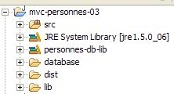
المشروع هو مشروع Java بسيط، وليس مشروع ويب Tomcat. تذكر أن الإصدار 2 من تطبيقنا سيستخدم طبقة [web] من الإصدار 1. لذلك لا داعي لكتابة هذه الطبقة.
مجلد [src]
يحتوي هذا المجلد على شفرة المصدر لطبقتي [dao] و[service]:
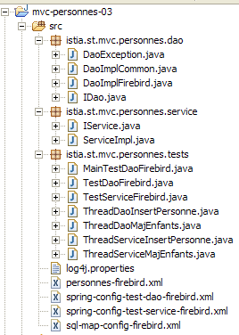
ويحتوي على حزم متنوعة:
- [istia.st.mvc.personnes.dao]: تحتوي على طبقة [dao]
- [istia.st.mvc.personnes.entites]: تحتوي على فئة [Person]
- [istia.st.mvc.people.service]: تحتوي على فئة [service]
- [istia.st.mvc.personnes.tests]: تحتوي على اختبارات JUnit لطبقات [dao] و [service]
بالإضافة إلى ملفات التكوين التي يجب أن تكون موجودة في مسار ClassPath للتطبيق.
مجلد [database]
يحتوي هذا المجلد على قاعدة بيانات Firebird الخاصة بالأشخاص:
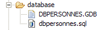
- [dbpersonnes.gdb] هي قاعدة البيانات.
- [dbpersonnes.sql] هو البرنامج النصي SQL لإنشاء قاعدة البيانات:
المجلد [lib]
يحتوي هذا المجلد على الملفات التي يحتاجها التطبيق:
 |
لاحظ وجود برنامج تشغيل JDBC [firebirdsql-full.jar] لنظام إدارة قواعد البيانات Firebird، بالإضافة إلى عدد من ملفات [spring-*.jar]. كان بإمكاننا استخدام ملف [spring.jar] الوحيد الموجود في مجلد [dist] الخاص بالتوزيع، والذي يحتوي على جميع فئات Spring. يمكننا أيضًا استخدام الأرشيفات الضرورية للمشروع فقط. وهذا ما قمنا به هنا، مسترشدين بأخطاء الفئات المفقودة التي أبلغ عنها Eclipse وأسماء أرشيفات Spring الجزئية. تم وضع جميع هذه الأرشيفات من المجلد [lib] في مسار فئات (Classpath) المشروع.
مجلد [dist]
سيحتوي هذا المجلد على الأرشيفات الناتجة عن تجميع فئات التطبيق:

- [personnes-dao.jar]: أرشيف طبقة [dao]
- [personnes-service.jar]: أرشيف طبقة [service]
17.3. طبقة [dao]
17.3.1. مكونات طبقة [dao]
تتكون طبقة [dao] من الفئات والواجهات التالية:

- [IDao] هي الواجهة التي توفرها طبقة [dao]
- [DaoImplCommon] هي تطبيق لهذه الواجهة حيث يتم تخزين مجموعة الأشخاص في جدول قاعدة بيانات. تجمع [DaoImplCommon] الوظائف المستقلة عن نظام إدارة قواعد البيانات (DBMS).
- [DaoImplFirebird] هي فئة مشتقة من [DaoImplCommon] لإدارة قاعدة بيانات Firebird على وجه التحديد.
- [DaoException] هو نوع الاستثناءات غير المعالجة التي تطلقها طبقة [dao]. هذه الفئة موجودة منذ الإصدار 1.
واجهة [IDao] هي كما يلي:
- تحتوي الواجهة على نفس الطرق الأربع الموجودة في الإصدار السابق.
ستكون فئة [DaoImplCommon] التي تنفذ هذه الواجهة كما يلي:
- السطران 8–9: تنفذ فئة [DaoImpl] واجهة [IDao] وبالتالي الطرق الأربع [getAll، getOne، saveOne، deleteOne].
- الأسطر 27–37: تستخدم الطريقة [saveOne] طريقتين داخليتين، [insertPerson] و [updatePerson]، اعتمادًا على ما إذا كان يلزم إضافة شخص أو تعديله.
- السطر 50: الطريقة الخاصة [check] هي نفسها الموجودة في الإصدار السابق. لن نعيد تناولها هنا.
- السطر 8: لتنفيذ واجهة [IDao]، تمتد فئة [DaoImpl] إلى فئة Spring [SqlMapClientDaoSupport].
17.3.2. طبقة الوصول إلى البيانات [iBATIS]
تستخدم فئة Spring [SqlMapClientDaoSupport] إطار عمل تابع لجهة خارجية [Ibatis SqlMap] متاح على الرابط [http://ibatis.apache.org/]:

[iBATIS] هو مشروع Apache يسهل إنشاء طبقات [DAO] التي تعتمد على قواعد البيانات. مع [iBATIS]، تكون بنية طبقة الوصول إلى البيانات كما يلي:
 |
يقع [iBATIS] بين طبقة [DAO] للتطبيق ومحرك JDBC الخاص بقاعدة البيانات. هناك بدائل لـ [iBATIS]، مثل [Hibernate]:

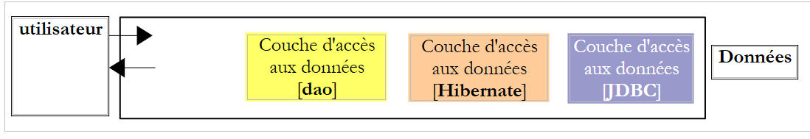 |
يتطلب استخدام إطار عمل [iBATIS] ملفين مضغوطين [ibatis-common، ibatis-sqlmap]، وقد تم وضعهما في مجلد [lib] الخاص بالمشروع:
 |
تغلف فئة [SqlMapClientDaoSupport] الجزء العام من استخدام إطار عمل [iBATIS]، أي مقاطع الكود الموجودة في جميع طبقات [DAO] التي تستخدم أداة [iBATIS]. لكتابة الجزء غير العام من الكود — أي الكود الخاص بطبقة [DAO] التي نكتبها — ما عليك سوى اشتقاق فئة [SqlMapClientDaoSupport]. وهذا ما نقوم به هنا.
يتم تعريف فئة [SqlMapClientDaoSupport] على النحو التالي:

من بين أساليب هذه الفئة، تسمح لنا إحدى هذه الأساليب بتكوين عميل [iBATIS] الذي سنستخدمه لتشغيل قاعدة البيانات:

الكائن [SqlMapClient sqlMapClient] هو كائن [iBATIS] المستخدم للوصول إلى قاعدة البيانات. وهو بحد ذاته ينفذ طبقة [iBATIS] في بنية نظامنا:
 |
فيما يلي تسلسل نموذجي للإجراءات مع هذا الكائن:
- طلب اتصال من مجموعة الاتصالات
- فتح معاملة
- تنفيذ سلسلة من عبارات SQL المخزنة في ملف التكوين
- إغلاق المعاملة
- إعادة الاتصال إلى المجموعة
إذا كان تطبيق [DaoImplCommon] الخاص بنا يعمل مباشرة مع [iBATIS]، فسيتعين عليه تنفيذ هذه التسلسل بشكل متكرر. العملية 3 هي الوحيدة الخاصة بطبقة [dao]؛ أما العمليات الأخرى فهي عامة. ستتولى فئة Spring [SqlMapClientDaoSupport] العمليات 1 و 2 و 4 و 5 بنفسها، وتفوض العملية 3 إلى فئتها المشتقة، وهي في هذه الحالة فئة [DaoImplCommon].
لكي تعمل فئة [SqlMapClientDaoSupport]، فإنها تتطلب مرجعًا إلى كائن iBATIS [SqlMapClient sqlMapClient]، الذي سيتولى الاتصال بقاعدة البيانات. يتطلب هذا الكائن شيئين لكي يعمل:
- كائن [DataSource] متصل بقاعدة البيانات التي سيطلب منها الاتصالات
- ملف تكوين واحد (أو أكثر) حيث يتم إخراج عبارات SQL المراد تنفيذها. في الواقع، هذه العبارات ليست موجودة في كود Java. يتم تحديدها بواسطة كود في ملف التكوين، ويستخدم كائن [SqlMapClient sqlMapClient] هذا الكود لتنفيذ عبارة SQL محددة.
سيكون التكوين الأولي لطبقة [dao] الخاصة بنا والذي يعكس البنية المذكورة أعلاه كما يلي:
<!-- the [dao] layer access classes -->
<bean id="dao" class="istia.st.mvc.personnes.dao.DaoImplCommon">
<property name="sqlMapClient">
<ref local="sqlMapClient"/>
</property>
</bean>
هنا، يتم تهيئة الخاصية [sqlMapClient] (السطر 3) لفئة [DaoImplCommon] (السطر 2). يتم تهيئتها بواسطة طريقة [setSqlMapClient] لفئة [DaoImpl]. هذه الفئة لا تحتوي على هذه الطريقة. بل إن فئتها الأم [SqlMapClientDaoSupport] هي التي تحتوي عليها. لذلك، فإن هذه الفئة هي التي يتم تهيئتها هنا في الواقع.
الآن، في السطر 4، نشير إلى كائن باسم "sqlMapClient" لم يتم إنشاؤه بعد. كما ذكرنا، هذا الكائن من النوع [SqlMapClient]، وهو نوع [iBATIS]:

[SqlMapClient] هي واجهة. يوفر Spring فئة [SqlMapClientFactoryBean] للحصول على كائن ينفذ هذه الواجهة:

تذكر أننا نسعى إلى إنشاء مثيل لكائن ينفذ واجهة [SqlMapClient]. لا يبدو أن هذا هو الحال مع فئة [SqlMapClientFactoryBean]. تنفذ هذه الفئة واجهة [FactoryBean] (انظر أعلاه). وتحتوي على طريقة [getObject()] التالية:

عندما يُطلب من Spring مثيل كائن ينفذ واجهة [FactoryBean]، فإنه:
- ينشئ مثيل [I] للفئة — في هذه الحالة، ينشئ مثيلًا من النوع [SqlMapClientFactoryBean].
- يعيد إلى الطريقة المستدعية نتيجة طريقة [I].getObject() — ستُرجع طريقة [SqlMapClientFactoryBean].getObject() كائنًا ينفذ واجهة [SqlMapClient].
لإرجاع كائن ينفذ واجهة [SqlMapClient]، تحتاج فئة [SqlMapClientFactoryBean] إلى معلومتين مطلوبتين لهذا الكائن:
- كائن [DataSource] متصل بقاعدة البيانات التي سيطلب منها الاتصالات
- ملف تكوين واحد (أو أكثر) حيث يتم تخزين عبارات SQL المراد تنفيذها
تحتوي فئة [SqlMapClientFactoryBean] على طرق تعيين لتهيئة هاتين الخاصيتين:

نحن نحرز تقدماً... بدأ ملف التكوين الخاص بنا يتشكل وأصبح كما يلي:
<!-- SqlMapCllient -->
<bean id="sqlMapClient"
class="org.springframework.orm.ibatis.SqlMapClientFactoryBean">
<property name="dataSource">
<ref local="dataSource"/>
</property>
<property name="configLocation">
<value>classpath:sql-map-config-firebird.xml</value>
</property>
</bean>
<!-- the [dao] layer access classes -->
<bean id="dao" class="istia.st.mvc.personnes.dao.DaoImplCommon">
<property name="sqlMapClient">
<ref local="sqlMapClient"/>
</property>
</bean>
- السطران 2-3: حبة "sqlMapClient" هي من النوع [SqlMapClientFactoryBean]. مما تم شرحه للتو، نعلم أنه عندما نطلب من Spring مثيلًا لهذه الحبة، نحصل على كائن ينفذ واجهة iBATIS [SqlMapClient]. وهذا الكائن هو الذي سيتم الحصول عليه في السطر 14.
- السطور 7-9: نحدد أن ملف التكوين المطلوب من قبل كائن iBATIS [SqlMapClient] يسمى "sql-map-config-firebird.xml" وأنه يجب أن يكون موجودًا في ClassPath للتطبيق. يتم استخدام طريقة [SqlMapClientFactoryBean].setConfigLocation هنا.
- الأسطر 4-6: نقوم بتهيئة الخاصية [dataSource] لـ [SqlMapClientFactoryBean] باستخدام طريقة [setDataSource] الخاصة بها.
السطر 5: نشير إلى bean باسم "dataSource" لم يتم إنشاؤه بعد. إذا نظرنا إلى المعلمة المتوقعة بواسطة طريقة [setDataSource] الخاصة بـ [SqlMapClientFactoryBean]، نرى أنها من النوع [DataSource]:

مرة أخرى، نحن نتعامل مع واجهة نحتاج إلى إيجاد فئة تنفيذ لها. دور هذه الفئة هو تزويد التطبيق بكفاءة باتصالات بقاعدة بيانات محددة. لا يمكن لنظام إدارة قواعد البيانات (DBMS) إبقاء عدد كبير من الاتصالات مفتوحة في وقت واحد. لتقليل عدد الاتصالات المفتوحة في أي وقت معين، يجب علينا، لكل تفاعل مع قاعدة البيانات، القيام بما يلي:
- فتح اتصال
- بدء معاملة
- تنفيذ عبارات SQL
- إغلاق المعاملة
- إغلاق الاتصال
يستغرق فتح وإغلاق الاتصالات بشكل متكرر وقتًا طويلاً. لمعالجة هاتين المشكلتين — الحد من عدد الاتصالات المفتوحة في أي وقت معين وتقليل العبء الإضافي لفتحها وإغلاقها — غالبًا ما تتبع الفئات التي تنفذ واجهة [DataSource] الخطوات التالية:
- عند الإنشاء، تفتح N اتصالاً بقاعدة البيانات المستهدفة. عادةً ما يكون لـ N قيمة افتراضية ويمكن تعريفها في ملف التكوين. تظل هذه الاتصالات N مفتوحة طوال الوقت وتشكل مجموعة من الاتصالات المتاحة لخيوط التطبيق.
- عندما يطلب مؤشر ترابط التطبيق اتصالاً، يزوده كائن [DataSource] بواحد من الاتصالات N المفتوحة عند بدء التشغيل، إذا كان أي منها لا يزال متاحاً. وعندما يغلق التطبيق الاتصال، لا يتم إغلاقه فعلياً بل يتم إرجاعه ببساطة إلى مجموعة الاتصالات المتاحة.
هناك العديد من تطبيقات واجهة [DataSource] المتاحة مجانًا. هنا، سنستخدم تطبيق [commons DBCP] المتاح على الرابط [http://jakarta.apache.org/commons/dbcp/]:

يتطلب استخدام أداة [commons DBCP] ملفين مضغوطين [commons-dbcp، commons-pool]، وكلاهما تم وضعهما في مجلد [lib] الخاص بالمشروع:
 |
توفر فئة [BasicDataSource] من [commons DBCP] تطبيق [DataSource] الذي نحتاجه:

ستوفر لنا هذه الفئة مجموعة اتصالات للوصول إلى قاعدة بيانات Firebird الخاصة بتطبيقنا [dbpersonnes.gdb]. وللقيام بذلك، يجب أن نزودها بالمعلومات اللازمة لإنشاء الاتصالات ضمن المجموعة:
- اسم برنامج تشغيل JDBC المراد استخدامه – يتم تهيئته باستخدام [setDriverClassName]
- عنوان URL لقاعدة البيانات المراد استخدامها – يتم تهيئته باستخدام [setUrl]
- اسم المستخدم الذي يمتلك الاتصال – يتم تهيئته باستخدام [setUsername] (وليس setUserName كما قد يتوقع المرء)
- كلمة المرور الخاصة به – يتم تهيئتها باستخدام [setPassword]
قد يبدو ملف التكوين لطبقة [dao] الخاصة بنا كما يلي:
<?xml version="1.0" encoding="ISO_8859-1"?>
<!DOCTYPE beans SYSTEM "http://www.springframework.org/dtd/spring-beans.dtd">
<beans>
<!-- data source DBCP -->
<bean id="dataSource" class="org.apache.commons.dbcp.BasicDataSource"
destroy-method="close">
<property name="driverClassName">
<value>org.firebirdsql.jdbc.FBDriver</value>
</property>
<!-- warning: do not leave spaces between the two <value> tags in the url -->
<property name="url">
<value>jdbc:firebirdsql:localhost/3050:C:/data/2005-2006/eclipse/dvp-eclipse-tomcat/mvc-personnes-03/database/dbpersonnes.gdb</value>
</property>
<property name="username">
<value>sysdba</value>
</property>
<property name="password">
<value>masterkey</value>
</property>
</bean>
<!-- SqlMapCllient -->
<bean id="sqlMapClient"
class="org.springframework.orm.ibatis.SqlMapClientFactoryBean">
<property name="dataSource">
<ref local="dataSource"/>
</property>
<property name="configLocation">
<value>classpath:sql-map-config-firebird.xml</value>
</property>
</bean>
<!-- the [dao] layer access classes -->
<bean id="dao" class="istia.st.mvc.personnes.dao.DaoImplCommon">
<property name="sqlMapClient">
<ref local="sqlMapClient"/>
</property>
</bean>
</beans>
- الأسطر 7–9: اسم برنامج تشغيل JDBC لنظام إدارة قواعد البيانات Firebird
- الأسطر 11-13: عنوان URL لقاعدة بيانات Firebird [dbpersonnes.gdb]. انتبه جيدًا لكيفية كتابة هذا العنوان. يجب ألا تكون هناك مسافات بين علامات <value> وعنوان URL.
- الأسطر 14-16: مالك الاتصال – هنا، [sysdba]، وهو المسؤول الافتراضي لتوزيعات Firebird
- الأسطر 17–19: كلمة المرور الخاصة بهم [masterkey]—وهي أيضًا القيمة الافتراضية
لقد أحرزنا تقدمًا كبيرًا، ولكن لا تزال هناك بعض نقاط التكوين التي يجب توضيحها: يشير السطر 28 إلى ملف [sql-map-config-firebird.xml]، الذي يجب أن يقوم بتكوين iBATIS [SqlMapClient]. قبل فحص محتوياته، دعونا نعرض موقع ملفات التكوين هذه في مشروع Eclipse الخاص بنا:

- [spring-config-test-dao-firebird.xml] هو ملف التكوين لطبقة [dao] التي فحصناها للتو
- يُشار إلى [sql-map-config-firebird.xml] بواسطة [spring-config-test-dao-firebird.xml]. سنقوم بفحصه.
- يتم الإشارة إلى [personnes-firebird.xml] بواسطة [sql-map-config-firebird.xml]. سنقوم بفحصه.
توجد الملفات الثلاثة المذكورة أعلاه في المجلد [src]. في Eclipse، هذا يعني أنها ستكون موجودة في مجلد [bin] الخاص بالمشروع (غير موضح أعلاه) عند وقت التشغيل. هذا المجلد هو جزء من مسار فئات التطبيق (ClassPath). وبالتالي، ستكون الملفات الثلاثة المذكورة أعلاه موجودة في مسار فئات التطبيق. وهذا أمر ضروري.
ملف [sql-map-config-firebird.xml] هو كما يلي:
<?xml version="1.0" encoding="UTF-8" ?>
<!DOCTYPE sqlMapConfig
PUBLIC "-//iBATIS.com//DTD SQL Map Config 2.0//EN"
"http://www.ibatis.com/dtd/sql-map-config-2.dtd">
<sqlMapConfig>
<sqlMap resource="personnes-firebird.xml"/>
</sqlMapConfig>
- يجب أن يحتوي هذا الملف على <sqlMapConfig> كعلامة جذر (السطران 6 و 8)
- السطر 7: تُستخدم علامة <sqlMap> لتحديد الملفات التي تحتوي على عبارات SQL المراد تنفيذها. غالبًا ما يكون هناك ملف واحد لكل جدول، وإن لم يكن ذلك ضروريًا. وهذا يسمح بتجميع عبارات SQL الخاصة بجدول معين في ملف واحد. ومع ذلك، فإن عبارات SQL التي تتضمن جداول متعددة شائعة. في مثل هذه الحالات، لا تنطبق البنية السابقة. من المهم ببساطة تذكر أن جميع الملفات المحددة بعلامات <sqlMap> سيتم دمجها. يتم البحث عن هذه الملفات في مسار ClassPath للتطبيق.
يصف ملف [personnes-firebird.xml] عبارات SQL التي سيتم تنفيذها على الجدول [PERSONNES] في قاعدة بيانات Firebird [dbpersonnes.gdb]. ومحتواه كما يلي:
<?xml version="1.0" encoding="UTF-8" ?>
<!DOCTYPE sqlMap
PUBLIC "-//iBATIS.com//DTD SQL Map 2.0//EN"
"http://www.ibatis.com/dtd/sql-map-2.dtd">
<sqlMap>
<!-- alias class [Person] -->
<typeAlias alias="Personne.classe"
type="istia.st.mvc.personnes.entites.Personne"/>
<!-- mapping table [PERSONNES] - object [Person] -->
<resultMap id="Personne.map"
class="Personne.classe">
<result property="id" column="ID" />
<result property="version" column="VERSION" />
<result property="nom" column="NOM"/>
<result property="prenom" column="PRENOM"/>
<result property="dateNaissance" column="DATENAISSANCE"/>
<result property="marie" column="MARIE"/>
<result property="nbEnfants" column="NBENFANTS"/>
</resultMap>
<!-- list of all persons -->
<select id="Personne.getAll" resultMap="Personne.map" > select ID, VERSION, NOM,
PRENOM, DATENAISSANCE, MARIE, NBENFANTS FROM PERSONNES</select>
<!-- get a specific person -->
<select id="Personne.getOne" resultMap="Personne.map" >select ID, VERSION, NOM,
PRENOM, DATENAISSANCE, MARIE, NBENFANTS FROM PERSONNES WHERE ID=#value#</select>
<!-- add a person -->
<insert id="Personne.insertOne" parameterClass="Personne.classe">
<selectKey keyProperty="id">
SELECT GEN_ID(GEN_PERSONNES_ID,1) as "value" FROM RDB$$DATABASE
</selectKey>
insert into
PERSONNES(ID, VERSION, NOM, PRENOM, DATENAISSANCE, MARIE, NBENFANTS)
VALUES(#id#, #version#, #nom#, #prenom#, #dateNaissance#, #marie#,
#nbEnfants#) </insert>
<!-- update a person -->
<update id="Personne.updateOne" parameterClass="Personne.classe"> update
PERSONNES set VERSION=#version#+1, NOM=#nom#, PRENOM=#prenom#, DATENAISSANCE=#dateNaissance#,
MARIE=#marie#, NBENFANTS=#nbEnfants# WHERE ID=#id# and
VERSION=#version#</update>
<!-- delete a person -->
<delete id="Personne.deleteOne" parameterClass="int"> delete FROM PERSONNES WHERE
ID=#value# </delete>
</sqlMap>
- يجب أن يحتوي الملف على <sqlMap> كعلامة جذر (السطران 7 و45)
- السطران 9 و10: لتسهيل كتابة الملف، نمنح الاسم المستعار [Person.class] للفئة [istia.st.springmvc.personnes.entites.Person].
- السطور 12-21: تحدد التعيينات بين الأعمدة في جدول [PERSONNES] والحقول في كائن [Personne].
- السطران 23 و24: عبارة SQL [SELECT] لاسترداد جميع الأشخاص من جدول [PERSONNES]
- السطور 26–27: عبارة SQL [select] لاسترداد شخص معين من جدول [PERSONNES]
- الأسطر 29-36: عبارة SQL [insert] التي تُدرج شخصًا في جدول [PERSONS]
- الأسطر 38-41: عبارة SQL [update] التي تقوم بتحديث شخص في جدول [PERSONS]
- الأسطر 42-44: أمر SQL [delete] الذي يحذف شخصًا من جدول [PERSONS]
سيتم شرح دور ومغزى محتويات ملف [people-firebird.xml] من خلال دراسة فئة [DaoImplCommon]، التي تنفذ طبقة [dao].
17.3.3. فئة [DaoImplCommon]
دعونا نعيد النظر في بنية الوصول إلى البيانات:
 |
فئة [DaoImplCommon] هي كما يلي:
سنقوم بفحص الطرق واحدة تلو الأخرى.
getAll
تسترد هذه الطريقة جميع الأشخاص الموجودين في القائمة. وفيما يلي كودها:
أولاً، دعونا نتذكر أن فئة [DaoImplCommon] مشتقة من فئة [SqlMapClientDaoSupport] في Spring. وهذه الفئة هي التي توفر الطريقة [getSqlMapClientTemplate()] المستخدمة في السطر 3 أعلاه. وتتميز هذه الطريقة بالتوقيع التالي:

يغلف النوع [SqlMapClientTemplate] كائن [SqlMapClient] من طبقة [iBATIS]. ومن خلاله سنقوم بالوصول إلى قاعدة البيانات. يمكن استخدام نوع [iBATIS] SqlMapClient مباشرةً لأن فئة [SqlMapClientDaoSupport] لديها حق الوصول إليه:

عيب فئة [iBATIS] SqlMapClient هو أنها ترمي استثناءات [SQLException]، وهو نوع استثناء خاضع للرقابة، أي استثناء يجب معالجته بواسطة كتلة try/catch أو الإعلان عنه في توقيع الطرق التي ترمي به. ومع ذلك، دعونا نتذكر أن طبقة [dao] تنفذ واجهة [IDao] التي لا تتضمن طرقها استثناءات في توقيعاتها. وبالتالي، لا يمكن أن تحتوي طرق الفئات التي تنفذ واجهة [IDao] على استثناءات في توقيعاتها. لذلك، يجب علينا اعتراض كل استثناء [SQLException] يرميه طبقة [iBATIS] وتغليفه في استثناء غير متحكم فيه. وسيكون نوع [DaoException] من مشروعنا مناسبًا لهذا التغليف.
بدلاً من معالجة هذه الاستثناءات بأنفسنا، سنعهد بها إلى نوع Spring [SqlMapClientTemplate]، الذي يغلف كائن [SqlMapClient] من طبقة [iBATIS]. في الواقع، تم تصميم [SqlMapClientTemplate] لاعتراض استثناءات [SQLException] التي ترميها طبقة [SqlMapClient] وتغليفها في نوع [ DataAccessException] غير المعالج. هذا السلوك يناسبنا. نحتاج ببساطة إلى تذكر أن طبقة [dao] قادرة الآن على رمي نوعين من الاستثناءات غير المعالجة:
- نوع [DaoException] المخصص لدينا
- نوع Spring [DataAccessException]
يتم تعريف نوع [SqlMapClientTemplate] على النحو التالي:
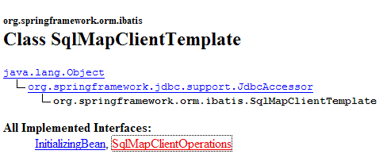
وهو ينفذ واجهة [SqlMapClientOperations] التالية:
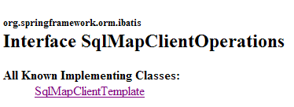
تحدد هذه الواجهة الطرق القادرة على استخدام محتويات ملف [people-firebird.xml]:
[queryForList]

تسمح لك هذه الطريقة بإصدار عبارة [SELECT] واسترداد النتيجة كقائمة من الكائنات:
- [statementName]: معرف (id) عبارة [select] في ملف التكوين
- [parameterObject]: كائن "parameter" لـ [SELECT] المعلم. يمكن أن يتخذ كائن "parameter" شكلين:
- كائن يتوافق مع معيار JavaBean: تكون معلمات عبارة [SELECT] عندئذٍ أسماء حقول JavaBean. وعند تنفيذ عبارة [SELECT]، يتم استبدالها بقيم هذه الحقول.
- قاموس: تكون معلمات عبارة [select] عندئذٍ مفاتيح القاموس. وعند تنفيذ عبارة [select]، يتم استبدالها بالقيم المرتبطة بها في القاموس.
- إذا لم يُرجع [SELECT] أي صفوف، فإن نتيجة [List] تكون كائنًا فارغًا ولكنها ليست null (يجب التحقق من ذلك).
[queryForObject]

هذه الطريقة مطابقة من الناحية النظرية للطريقة السابقة ولكنها تُرجع كائنًا واحدًا فقط. إذا لم يُرجع [SELECT] أي صفوف، تكون النتيجة مؤشرًا فارغًا.
[insert]
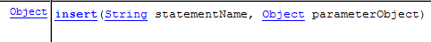
تنفذ هذه الطريقة عبارة SQL [insert] التي تم تكوينها بواسطة المعلمة الثانية. الكائن الذي يتم إرجاعه هو المفتاح الأساسي للصف الذي تم إدراجه. لا يوجد أي شرط لاستخدام هذه النتيجة.
[update]

تقوم هذه الطريقة بتنفيذ عبارة SQL [update] التي تم تكوينها بواسطة المعلمة الثانية. والنتيجة هي عدد الصفوف التي تم تعديلها بواسطة عبارة SQL [update].
[حذف]

تقوم هذه الطريقة بتنفيذ عبارة SQL [delete] التي تم تكوينها بواسطة المعلمة الثانية. والنتيجة هي عدد الصفوف التي تم حذفها بواسطة عبارة SQL [delete].
لنعد إلى طريقة [getAll] لفئة [DaoImplCommon]:
- السطر 4: يتم تنفيذ عبارة [select] المسماة "Person.getAll". لا تحتوي على معلمات، لذا فإن كائن "parameter" هو null.
في [people-firebird.xml]، يكون بيان [select] المسمى "Person.getAll" كما يلي:
<?xml version="1.0" encoding="UTF-8" ?>
<!DOCTYPE sqlMap
PUBLIC "-//iBATIS.com//DTD SQL Map 2.0//EN"
"http://www.ibatis.com/dtd/sql-map-2.dtd">
<sqlMap>
<!-- alias class [Person] -->
<typeAlias alias="Personne.classe"
type="istia.st.mvc.personnes.entites.Personne"/>
<!-- mapping table [PERSONNES] - object [Person] -->
<resultMap id="Personne.map"
class="Personne.classe">
<result property="id" column="ID" />
<result property="version" column="VERSION" />
<result property="nom" column="NOM"/>
<result property="prenom" column="PRENOM"/>
<result property="dateNaissance" column="DATENAISSANCE"/>
<result property="marie" column="MARIE"/>
<result property="nbEnfants" column="NBENFANTS"/>
</resultMap>
<!-- list of all persons -->
<select id="Personne.getAll" resultMap="Personne.map" > select ID, VERSION, NOM,
PRENOM, DATENAISSANCE, MARIE, NBENFANTS FROM PERSONNES</select>
...
</sqlMap>
- السطر 23: عبارة SQL "Person.getAll" غير معلمة (لا توجد معلمات في نص الاستعلام).
- السطر 3 من طريقة [getAll] يستدعي تنفيذ استعلام [select] المسمى "Personne.getAll". سيتم تنفيذ هذا الاستعلام. يعتمد [iBATIS] على JDBC. لذلك نعلم أن نتيجة الاستعلام ستُرجع ككائن [ResultSet]. السطر 23: تحدد السمة [resultMap] لعلامة <select> لـ [iBATIS] أي "resultMap" يجب استخدامه لتحويل كل صف من [ResultSet] الذي تم الحصول عليه إلى كائن. إن "resultMap" [Person.map] المحددة في الأسطر 12-21 هي التي تحدد كيفية تعيين صف من جدول [PERSONNES] إلى كائن من النوع [Person]. سيستخدم [iBATIS] هذه التعيينات لإرجاع قائمة بكائنات [Person] بناءً على الصفوف الموجودة في [ResultSet].
- ثم يعرض السطر 3 من طريقة [getAll] مجموعة من كائنات [Person]
- قد ترمي طريقة [queryForList] استثناء Spring [DataAccessException]. نسمح له بالانتشار.
سنشرح الطرق الأخرى لفئة [AbstractDaoImpl] بشكل أكثر إيجازًا، حيث تم بالفعل تغطية أساسيات استخدام [iBATIS] في مناقشة طريقة [getAll].
getOne
تسترد هذه الطريقة شخصًا محددًا بواسطة [id] الخاص به. وفيما يلي كودها:
- السطر 4: يطلب تنفيذ عبارة [select] المسماة "Person.getOne". وهذا هو ما يلي في ملف [people-firebird.xml]:
<!-- get a specific person -->
<select id="Personne.getOne" resultMap="Personne.map" parameterClass="int">
select ID, VERSION, NOM, PRENOM, DATENAISSANCE, MARIE, NBENFANTS FROM
PERSONNES WHERE ID=#value#</select>
يتم تكوين استعلام SQL بواسطة المعلمة #value# (السطر 4). تحدد السمة #value# قيمة المعلمة التي يتم تمريرها إلى استعلام SQL عندما تكون تلك المعلمة من نوع بسيط: Integer، Double، String، إلخ. في سمات العلامة <select>، تشير السمة [parameterClass] إلى أن المعلمة من النوع Integer (السطر 2). في السطر 5 من [getOne]، نرى أن هذه المعلمة هي معرف الشخص الذي يتم البحث عنه، في شكل كائن Integer. هذا التحويل النوعي إلزامي لأن المعلمة الثانية لـ [queryForList] يجب أن تكون من النوع [Object].
سيتم تحويل نتيجة استعلام [select] إلى كائن عبر السمة [resultMap="Personne.map"] (السطر 2). وبالتالي، سنحصل على نوع [Personne].
- الأسطر 7–11: إذا لم يُرجع استعلام [select] أي صفوف، فإننا نسترد المؤشر الفارغ من السطر 4. وهذا يعني أنه لم يتم العثور على الشخص المطلوب. في هذه الحالة، نُطلق استثناء [DaoException] برمز 2 (الأسطر 9–10).
- السطر 13: إذا لم تحدث أي استثناءات، يتم إرجاع الكائن [Person] المطلوب.
deleteOne
تسمح لك هذه الطريقة بحذف شخص تم تحديده بواسطة [id] الخاص به. وفيما يلي كودها:
- السطران 4-5: يطلبان تنفيذ الأمر [delete] المسمى "Person.deleteOne". وهذا هو ما يلي في ملف [people-firebird.xml]:
<!-- delete a person -->
<delete id="Personne.deleteOne" parameterClass="int"> delete FROM PERSONNES WHERE
ID=#value# </delete>
يتم تكوين أمر SQL بواسطة المعلمة #value# (السطر 3) من النوع [parameterClass="int"] (السطر 2). سيكون هذا هو معرف الشخص الذي يتم البحث عنه (السطر 5 من deleteOne)
- السطر 4: نتيجة طريقة [SqlMapClientTemplate].delete هي عدد الصفوف التي تم حذفها.
- السطران 7 و8: إذا لم يحذف استعلام [delete] أي صفوف، فهذا يعني أن الشخص غير موجود. يتم إلقاء استثناء [DaoException] برمز 2 (السطر 8).
saveOne
تسمح لك هذه الطريقة بإضافة شخص جديد أو تعديل شخص موجود. وفيما يلي كودها:
- السطر 4: نتحقق من صحة الشخص باستخدام طريقة [check]. كانت هذه الطريقة موجودة بالفعل في الإصدار السابق وتم تعليقها في ذلك الوقت. ترمي هذه الطريقة استثناء [DaoException] إذا كان الشخص غير صالح. نسمح لهذا الاستثناء بالانتشار.
- السطر 6: إذا وصلنا إلى هذه النقطة، فهذا يعني أنه لم يحدث أي استثناء. وبالتالي، فإن الشخص صالح.
- الأسطر 6-11: اعتمادًا على معرف الشخص، يكون هذا إما إضافة (ID = -1) أو تحديث (ID ≠ -1). في كلتا الحالتين، يتم استدعاء طريقتين داخليتين للفئة:
- insertPersonne: للإضافة
- updatePersonne: للتحديث
insertPerson
تسمح لك هذه الطريقة بإضافة شخص جديد. وفيما يلي كودها:
- السطر 4: تعيين رقم إصدار الشخص الذي يتم إنشاؤه إلى 1
- السطر 9: أدخل السجل باستخدام الاستعلام المسمى "Person.insertOne"، وهو كما يلي:
<insert id="Personne.insertOne" parameterClass="Personne.classe">
<selectKey keyProperty="id">
SELECT GEN_ID(GEN_PERSONNES_ID,1) as "value" FROM RDB$$DATABASE
</selectKey>
insert into
PERSONNES(ID, VERSION, NOM, PRENOM, DATENAISSANCE, MARIE, NBENFANTS)
VALUES(#id#, #version#, #nom#, #prenom#, #dateNaissance#, #marie#,
#nbEnfants#) </insert>
هذا استعلام معلم، والمعلمة من النوع [Person] (parameterClass="Person.class"، السطر 1). تُستخدم حقول كائن [Person] التي تم تمريرها كمعلمة (السطر 9 من insertPersonne) لملء أعمدة الصف المراد إدراجه في جدول [PERSONS] (الأسطر 5–8). لدينا مشكلة يجب حلها. أثناء الإدراج، يكون للكائن [Person] المراد إدراجه معرف يساوي -1. يجب استبدال هذه القيمة بمفتاح أساسي صالح. للقيام بذلك، نستخدم الأسطر 2-4 من علامة <selectKey> أعلاه. وهي تحدد:
- (تابع)
- استعلام SQL الذي يجب تنفيذه للحصول على قيمة المفتاح الأساسي. الاستعلام الموضح هنا هو الذي قدمناه في القسم 17.1. تجدر الإشارة إلى نقطتين:
- "as 'value'" إلزامي. يمكنك أيضًا كتابة "as value"، لكن "value" هي كلمة رئيسية في Firebird يجب وضعها بين علامتي اقتباس.
- يُسمى جدول Firebird في الواقع [RDB$DATABASE]. ومع ذلك، يتم تفسير الحرف $ بواسطة [iBATIS]. وقد تم تجاوزه عن طريق مضاعفته.
- الحقل في كائن [Person] الذي يجب تهيئته بالقيمة التي تم استردادها بواسطة عبارة [SELECT]، وهو في هذه الحالة الحقل [id]. يتم تحديد هذا الحقل بواسطة السمة [keyProperty] في السطر 2.
- استعلام SQL الذي يجب تنفيذه للحصول على قيمة المفتاح الأساسي. الاستعلام الموضح هنا هو الذي قدمناه في القسم 17.1. تجدر الإشارة إلى نقطتين:
- السطران 6-7: لأغراض الاختبار، سننتظر 10 مللي ثانية قبل إجراء الإدراج للتحقق من وجود تعارضات بين الخيوط التي تحاول إجراء الإضافات في وقت واحد.
updatePerson
تسمح لك هذه الطريقة بتعديل شخص موجود بالفعل في جدول [PERSONNES]. وفيما يلي كودها:
- قد يفشل التحديث لسببين على الأقل:
- الشخص المراد تحديثه غير موجود
- الشخص المراد تحديثه موجود، لكن الخيط الذي يحاول تعديله لا يمتلك الإصدار الصحيح
- السطران 7 و8: يتم تنفيذ استعلام SQL [update] المسمى "Person.updateOne". وهو كما يلي:
<!-- update a person -->
<update id="Personne.updateOne" parameterClass="Personne.classe"> update
PERSONNES set VERSION=#version#+1, NOM=#nom#, PRENOM=#prenom#, DATENAISSANCE=#dateNaissance#,
MARIE=#marie#, NBENFANTS=#nbEnfants# WHERE ID=#id# and
VERSION=#version#</update>
- (تابع)
- السطر 2: الاستعلام معلم ويقبل نوع [Person] كمعلمة (parameterClass="Person.class"). هذا هو الشخص المراد تعديله (السطر 8 – updatePerson).
- نريد فقط تعديل الشخص الموجود في جدول [PERSONS] الذي له نفس المعرف والإصدار مثل المعلمة. ولهذا السبب لدينا القيد [WHERE ID=#id# and VERSION=#version#]. إذا تم العثور على هذا الشخص، يتم تحديثه باستخدام الشخص المعلمة ويتم زيادة إصداره بمقدار 1 (السطر 3 أعلاه).
- السطر 9: نسترد عدد الصفوف التي تم تحديثها.
- السطران 10-11: إذا كان هذا الرقم صفرًا، يتم إصدار [DaoException] برمز 2، مما يشير إلى أن الشخص المراد تحديثه غير موجود، أو أن إصداره قد تغير في هذه الأثناء.
17.4. اختبارات لطبقة [dao]
17.4.1. اختبار تنفيذ [DaoImplCommon]
الآن بعد أن كتبنا طبقة [dao]، نقترح اختبارها باستخدام اختبارات JUnit:

قبل إجراء اختبارات شاملة، يمكننا البدء ببرنامج [main] بسيط يعرض محتويات جدول [PERSONNES]. هذه هي فئة [MainTestDaoFirebird]:
ملف التكوين [spring-config-test-dao-firebird.xml] لطبقة [dao]، المستخدم في السطور 13–14، هو كما يلي:
<?xml version="1.0" encoding="ISO_8859-1"?>
<!DOCTYPE beans SYSTEM "http://www.springframework.org/dtd/spring-beans.dtd">
<beans>
<!-- data source DBCP -->
<bean id="dataSource" class="org.apache.commons.dbcp.BasicDataSource"
destroy-method="close">
<property name="driverClassName">
<value>org.firebirdsql.jdbc.FBDriver</value>
</property>
<!-- warning: do not leave spaces between the two <value> tags -->
<property name="url">
<value>jdbc:firebirdsql:localhost/3050:C:/data/2005-2006/eclipse/dvp-eclipse-tomcat/mvc-personnes-03/database/dbpersonnes.gdb</value>
</property>
<property name="username">
<value>sysdba</value>
</property>
<property name="password">
<value>masterkey</value>
</property>
</bean>
<!-- SqlMapCllient -->
<bean id="sqlMapClient"
class="org.springframework.orm.ibatis.SqlMapClientFactoryBean">
<property name="dataSource">
<ref local="dataSource"/>
</property>
<property name="configLocation">
<value>classpath:sql-map-config-firebird.xml</value>
</property>
</bean>
<!-- the [dao] layer access classes -->
<bean id="dao" class="istia.st.mvc.personnes.dao.DaoImplCommon">
<property name="sqlMapClient">
<ref local="sqlMapClient"/>
</property>
</bean>
</beans>
هذا الملف هو الملف الذي تمت مناقشته في القسم 17.3.2.
لأغراض الاختبار، يتم تشغيل نظام إدارة قواعد البيانات Firebird. محتويات الجدول [PERSONNES] هي كما يلي:

يؤدي تشغيل برنامج [MainTestDaoFirebird] إلى ظهور النتيجة التالية على الشاشة:

لقد نجحنا في الحصول على قائمة الأشخاص. يمكننا الآن الانتقال إلى اختبار JUnit.
اختبار JUnit [TestDaoFirebird] هو كما يلي:
- الاختبارات من [test1] إلى [test5] هي نفسها الموجودة في الإصدار 1، باستثناء [test4] الذي تغير قليلاً. الاختبار [test6] جديد. سنعلق فقط على هذين الاختبارين.
[test4]
يهدف [test4] إلى اختبار طريقة [updatePersonne - DaoImplCommon]. وإليك كود هذه الطريقة:
- السطران 4-5: ننتظر 10 مللي ثانية. هذا يجبر الخيط الذي ينفذ [updatePerson] على فقدان وحدة المعالجة المركزية (CPU)، مما قد يزيد من فرصنا في رؤية تعارضات الوصول بين الخيوط المتزامنة.
[test4] تطلق N=100 مؤشر ترابط مكلفة بزيادة عدد أبناء الشخص نفسه بمقدار 1 في وقت واحد. نريد أن نرى كيف يتم التعامل مع تعارضات الإصدارات وتعارضات الوصول.
يتم إنشاء الخيوط في الأسطر 8–13. سيقوم كل منها بزيادة عدد الأبناء للشخص الذي تم إنشاؤه في الأسطر 3–5 بمقدار 1. فيما يلي خيوط التحديث [ThreadDaoMajEnfants]:
قد تفشل عملية تحديث الشخص لأن الشخص الذي نريد تعديله غير موجود أو لأنه تم تحديثه مسبقًا بواسطة مؤشر ترابط آخر. يتم التعامل مع هاتين الحالتين هنا في الأسطر 67–69. في كلتا الحالتين، ترمي طريقة [updatePersonne] استثناء [DaoException] برمز 2. سيُجبر مؤشر الترابط بعد ذلك على إعادة تشغيل إجراء التحديث من البداية (حلقة while، السطر 34).
[test6]
يهدف [test6] إلى اختبار طريقة [insertPersonne - DaoImplCommon]. فيما يلي كود هذه الطريقة:
- السطران 6-7: ننتظر 10 مللي ثانية لإجبار الخيط الذي ينفذ [insertPerson] على فقدان وحدة المعالجة المركزية (CPU)، مما يزيد من فرصنا في رؤية تعارضات ناتجة عن قيام الخيوط بإجراء عمليات إدراج في نفس الوقت.
فيما يلي كود [test6]:
نقوم بإنشاء 100 مؤشر ترابط ستقوم بإدراج 100 شخص مختلف في وقت واحد. ستحصل جميع مؤشرات الترابط هذه على مفتاح أساسي للشخص الذي تحتاج إلى إدراجه، ثم يتم إيقافها مؤقتًا لمدة 10 مللي ثانية (السطر 10 – insertPerson) قبل أن تتمكن من تنفيذ عملية الإدراج. نريد التحقق من أن كل شيء يسير بسلاسة، وعلى وجه الخصوص، أن مؤشرات الترابط تحصل بالفعل على قيم مفاتيح أساسية مختلفة.
- الأسطر 7–11: يتم إنشاء مصفوفة من 100 شخص. هؤلاء الأشخاص هم جميعًا نسخ من الشخص p الذي تم إنشاؤه في الأسطر 4–5.
- الأسطر 14–17: يتم تشغيل 100 مؤشر ترابط للإدراج. كل مؤشر ترابط مسؤول عن إدراج واحد من الأشخاص الـ 100 الذين تم إنشاؤهم مسبقًا.
- الأسطر 19-23: ينتظر [test6] انتهاء كل خيط من الخيوط المائة التي أطلقها. وعندما يكتشف أن الخيط رقم i قد انتهى، يحذف الشخص الذي أدخله هذا الخيط للتو.
خيط الإدراج [ThreadDaoInsertPersonne] هو كما يلي:
- الأسطر 19–22: يقوم منشئ الخيط بتخزين الشخص المراد إدراجه وطبقة [DAO] المراد استخدامها للإدراج.
- السطر 30: يتم إدراج الشخص. في حالة حدوث استثناء، يتم تمريره إلى [test6].
الاختبارات
أثناء الاختبار، حصلنا على النتائج التالية:
 |
وبالتالي، فشل اختبار [test4]. فقد انخفض عدد العناصر التابعة إلى 69 بدلاً من 100 كما كان متوقعًا. ماذا حدث؟ دعونا نلقي نظرة على سجلات الشاشة. فهي تُظهر وجود استثناءات أطلقها Firebird:
Exception in thread "Thread-62" org.springframework.jdbc.UncategorizedSQLException: SqlMapClient operation; uncategorized SQLException for SQL []; SQL state [HY000]; error code [335544336];
--- The error occurred in personnes-firebird.xml.
--- The error occurred while applying a parameter map.
--- Check the Personne.updateOne-InlineParameterMap.
--- Check the statement (update failed).
--- Cause: org.firebirdsql.jdbc.FBSQLException: GDS Exception. 335544336. deadlock
update conflicts with concurrent update; nested exception is com.ibatis.common.jdbc.exception.NestedSQLException:
--- The error occurred in personnes-firebird.xml.
--- The error occurred while applying a parameter map.
- السطر 1 – حدث استثناء Spring [org.springframework.jdbc.UncategorizedSQLException]. هذا استثناء لم يتم التقاطه تم استخدامه لتغليف استثناء تم إلقائه بواسطة برنامج تشغيل Firebird JDBC، الموصوف في السطر 6.
- السطر 6 – ألقى برنامج تشغيل Firebird JDBC استثناءً من النوع [org.firebirdsql.jdbc.FBSQLException] برمز الخطأ 335544336.
- السطر 7: يشير إلى وجود تعارض في التزامن بين مؤشرين كانا يحاولان تحديث نفس الصف في جدول [PERSONNES] في نفس الوقت.
هذا ليس خطأً فادحًا. يمكن للخيط الذي يلتقط هذا الاستثناء إعادة محاولة التحديث. للقيام بذلك، قم بتعديل الكود في [ThreadDaoMajEnfants]:
- السطر 8: نتعامل مع استثناء من النوع [DaoException]. بناءً على ما قيل، يجب أن نتعامل مع الاستثناء الذي ظهر أثناء الاختبار، وهو من النوع [org.springframework.jdbc.UncategorizedSQLException]. ومع ذلك، لا يمكننا ببساطة التعامل مع هذا النوع، وهو نوع عام في Spring يهدف إلى تغليف الاستثناءات التي لا يتعرف عليها. يتعرف Spring على الاستثناءات التي يرميها برامج تشغيل JDBC لعدد من أنظمة إدارة قواعد البيانات مثل Oracle و MySQL و Postgres و DB2 و SQL Server ... ولكن ليس Firebird. لذلك، يتم تغليف أي استثناء يرميه برنامج تشغيل JDBC لـ Firebird في نوع Spring [org.springframework.jdbc.UncategorizedSQLException]:

كما هو موضح أعلاه، تنحدر فئة [UncategorizedSQLException] من فئة [DataAccessException] المذكورة في القسم 17.3.3. يمكنك تحديد الاستثناء الذي تم تغليفه في [UncategorizedSQLException] باستخدام طريقة [getSQLException] الخاصة بها:
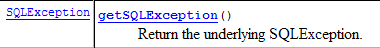
هذا [SQLException] هو الاستثناء الذي تم إلقائه بواسطة طبقة [iBATIS]، والتي تقوم بدورها بتغليف الاستثناء الذي تم إلقائه بواسطة برنامج تشغيل JDBC الخاص بقاعدة البيانات. يمكن الحصول على السبب الدقيق لـ [SQLException] باستخدام الطريقة:

نحصل على الكائن من النوع [Throwable] الذي تم إلقائه بواسطة برنامج تشغيل JDBC:

النوع [Throwable] هو الفئة الأم لـ [Exception].
هنا، نحتاج إلى التحقق من أن الكائن [Throwable] الذي ألقى به برنامج تشغيل Firebird JDBC — والذي تسبب في إلقاء [SQLException] بواسطة طبقة [iBATIS] — هو بالفعل استثناء من النوع [org.firebirdsql.gds.GDSException] برمز الخطأ 335544336. لاسترداد رمز الخطأ، يمكننا استخدام طريقة [getErrorCode()] الخاصة بفئة [org.firebirdsql.gds.GDSException].
إذا استخدمنا استثناء [org.firebirdsql.gds.GDSException] في كود [ThreadDaoMajEnfants]، فإن هذا الخيط لن يعمل إلا مع نظام إدارة قواعد البيانات Firebird. وينطبق الأمر نفسه على الاختبار [test4] الذي يستخدم هذا الخيط. نريد تجنب ذلك. في الواقع، نريد أن تظل اختبارات JUnit صالحة بغض النظر عن نظام إدارة قواعد البيانات المستخدم. لتحقيق ذلك، قررنا أن طبقة [dao] ستقوم بإلقاء استثناء [DaoException] برمز 4 كلما تم الكشف عن استثناء "تعارض التحديث"، بغض النظر عن نظام إدارة قواعد البيانات الأساسي. وبالتالي، يمكن إعادة كتابة مؤشر الترابط [ThreadDaoMajEnfants] على النحو التالي:
- الأسطر 34-36: تم التقاط استثناء [DaoException] برمز 4. سيُجبر مؤشر الترابط [ThreadDaoMajEnfants] على إعادة تشغيل إجراء التحديث من البداية (السطر 10)
لذلك يجب أن تكون طبقة [dao] قادرة على التعرف على استثناء "تعارض التحديث". يتم إلقاء هذا الاستثناء بواسطة برنامج تشغيل JDBC وهو خاص به. يجب معالجة هذا الاستثناء في طريقة [updatePerson] لفئة [DaoImplCommon]:
يجب أن تكون الأسطر 7–11 محاطة بكتلة try/catch. بالنسبة لنظام إدارة قواعد البيانات Firebird، نحتاج إلى التحقق من أن الاستثناء الذي تسبب في فشل التحديث هو من النوع [org.firebirdsql.gds.GDSException] وله رمز الخطأ 335544336. إذا وضعنا هذا النوع من الاختبارات في [DaoImplCommon]، فسوف نربط هذه الفئة بنظام إدارة قواعد البيانات Firebird، وهو أمر غير مرغوب فيه بالطبع. إذا أردنا الحفاظ على الفئة [DaoImplCommon] عامة الغرض، فنحن بحاجة إلى اشتقاقها ومعالجة الاستثناء في فئة خاصة بـ Firebird. وهذا ما نقوم به الآن.
17.4.2. فئة [DaoImplFirebird]
فيما يلي كودها:
- السطر 5: الفئة [DaoImplFirebird] مشتقة من [DaoImplCommon]، وهي الفئة التي درسناها للتو. وهي تعيد تعريف، في الأسطر 8–33، الطريقة [updatePersonne] التي تسبب لنا المشاكل.
- السطر 20: نلتقط استثناء Spring من النوع [UncategorizedSQLException]
- السطران 21-22: نتحقق من أن الاستثناء الأساسي من النوع [SQLException]، الذي تم إلقائه بواسطة طبقة [iBATIS]، ناتج عن استثناء من النوع [org.firebirdsql.jdbc.FBSQLException]
- السطر 25: نتحقق أيضًا من أن رمز الخطأ لهذا الاستثناء في Firebird هو 335544336، وهو رمز خطأ "التعطل".
- السطران 26-27: إذا تم استيفاء جميع هذه الشروط، يتم إلقاء استثناء [DaoException] برمز 4.
- الأسطر 36-44: تعمل طريقة [wait] على إيقاف مؤقتًا مؤشر الترابط الحالي لمدة N مللي ثانية. وهي مفيدة فقط للاختبار.
نحن جاهزون لاختبار طبقة [dao] الجديدة.
17.4.3. اختبار تطبيق [DaoImplFirebird]
تم تعديل ملف تكوين الاختبار [spring-config-test-dao-firebird.xml] لاستخدام تطبيق [DaoImplFirebird]:
<?xml version="1.0" encoding="ISO_8859-1"?>
<!DOCTYPE beans SYSTEM "http://www.springframework.org/dtd/spring-beans.dtd">
<beans>
<!-- data source DBCP -->
<bean id="dataSource" class="org.apache.commons.dbcp.BasicDataSource"
destroy-method="close">
<property name="driverClassName">
<value>org.firebirdsql.jdbc.FBDriver</value>
</property>
<!-- warning: do not leave spaces between the two <value> tags -->
<property name="url">
<value>jdbc:firebirdsql:localhost/3050:C:/data/2005-2006/eclipse/dvp-eclipse-tomcat/mvc-personnes-03/database/dbpersonnes.gdb</value>
</property>
<property name="username">
<value>sysdba</value>
</property>
<property name="password">
<value>masterkey</value>
</property>
</bean>
<!-- SqlMapCllient -->
<bean id="sqlMapClient"
class="org.springframework.orm.ibatis.SqlMapClientFactoryBean">
<property name="dataSource">
<ref local="dataSource"/>
</property>
<property name="configLocation">
<value>classpath:sql-map-config-firebird.xml</value>
</property>
</bean>
<!-- the [dao] layer access classes -->
<bean id="dao" class="istia.st.mvc.personnes.dao.DaoImplFirebird">
<property name="sqlMapClient">
<ref local="sqlMapClient"/>
</property>
</bean>
</beans>
- السطر 32: التنفيذ الجديد [DaoImplFirebird] لطبقة [dao].
نتائج اختبار [test4]، الذي كان قد فشل سابقًا، هي كما يلي:

تم اجتياز [test4]. فيما يلي الأسطر الأخيرة من سجلات الشاشة:
يشير السطر الأخير إلى أن الخيط رقم 36 كان آخر من انتهى. ويُظهر السطر 3 تعارضًا في الإصدار أجبر الخيط رقم 36 على إعادة تشغيل إجراء تحديث الشخص (السطر 4). وتُظهر سجلات أخرى تعارضات في الوصول أثناء عمليات التحديث:
يُظهر السطر 2 أن الخيط رقم 75 فشل أثناء التحديث بسبب تعارض في التحديث: عندما صدر أمر SQL [update] على الجدول [PERSONNES]، كان الصف الذي كان يجب تحديثه مقفلاً بواسطة خيط آخر. سيجبر هذا التعارض في الوصول الخيط رقم 75 على إعادة محاولة التحديث.
في ختام [test4]، نلاحظ اختلافًا كبيرًا عن نتائج الاختبار نفسه في الإصدار 1، حيث فشل بسبب مشكلات في التزامن. نظرًا لأن الطرق في طبقة [dao] في الإصدار 1 لم تكن متزامنة، فقد حدثت تعارضات في الوصول. هنا، لم نكن بحاجة إلى مزامنة طبقة [dao]. لقد تعاملنا ببساطة مع تعارضات الوصول التي أبلغ عنها Firebird.
دعونا الآن نجري اختبار JUnit بالكامل لطبقة [dao]:
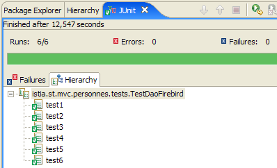
لذلك يبدو أن لدينا طبقة [dao] صالحة. لإعلان صلاحيتها بدرجة عالية من اليقين، سنحتاج إلى إجراء المزيد من الاختبارات. ومع ذلك، سنعتبرها جاهزة للعمل.
17.5. طبقة [service]
17.5.1. مكونات طبقة [service]
تتكون طبقة [service] من الفئات والواجهات التالية:

- [IService] هي الواجهة التي تقدمها طبقة [الخدمة]
- [ServiceImpl] هي تطبيق لهذه الواجهة
واجهة [IService] هي كما يلي:
- تحتوي الواجهة على نفس الطرق الأربع الموجودة في الإصدار 1، ولكنها تحتوي على طريقتين إضافيتين:
- saveMany: تسمح لك بحفظ عدة أشخاص في نفس الوقت بطريقة متجانسة. إما أن يتم حفظهم جميعًا، أو لا يتم حفظ أي منهم.
- deleteMany: تسمح لك بحذف عدة أشخاص في نفس الوقت بطريقة متجانسة. إما أن يتم حذفهم جميعًا، أو لا يتم حذف أي منهم.
لن يتم استخدام هاتين الطريقتين من قبل تطبيق الويب. لقد أضفناهما لتوضيح مفهوم معاملة قاعدة البيانات. يجب تنفيذ كلتا الطريقتين ضمن معاملة لتحقيق الترابط المطلوب.
ستكون فئة [ServiceImpl] التي تنفذ هذه الواجهة كما يلي:
- تستدعي الطرق [getAll، getOne، insertOne، saveOne] طرق طبقة [dao] التي تحمل نفس الأسماء.
- الأسطر 42–47: تقوم الطريقة [saveMany] بحفظ الأشخاص الموجودين في المصفوفة التي تم تمريرها كمعلمة، واحدًا تلو الآخر.
- الأسطر 50–55: تقوم الطريقة [deleteMany] بحذف الأشخاص الذين تم تمرير معرفاتهم كمعلمة صفيف، واحدًا تلو الآخر.
ذكرنا أن طريقتي [saveMany] و [deleteMany] يجب أن يتم تنفيذهما ضمن معاملة لضمان طبيعة "كل شيء أو لا شيء" لهذه الطرق. يمكننا أن نرى أن الكود أعلاه يتجاهل تمامًا مفهوم المعاملات هذا. سيظهر هذا فقط في ملف التكوين لطبقة [service].
17.5.2. تكوين طبقة [خدمة ]
أعلاه، في السطر 11، نرى أن تنفيذ [ServiceImpl] يحتوي على مرجع إلى طبقة [dao]. سيتم تهيئة هذا، كما في الإصدار 1، بواسطة Spring عند إنشاء مثيل لطبقة [service - ServiceImpl]. ملف التكوين الذي سيمكّن من إنشاء مثيل لطبقة [service] هو كما يلي:
<?xml version="1.0" encoding="ISO_8859-1"?>
<!DOCTYPE beans SYSTEM "http://www.springframework.org/dtd/spring-beans.dtd">
<beans>
<!-- data source DBCP -->
<bean id="dataSource" class="org.apache.commons.dbcp.BasicDataSource"
destroy-method="close">
<property name="driverClassName">
<value>org.firebirdsql.jdbc.FBDriver</value>
</property>
<property name="url">
<!-- warning: do not leave spaces between the two <value> tags -->
<value>jdbc:firebirdsql:localhost/3050:C:/data/2005-2006/eclipse/dvp-eclipse-tomcat/mvc-personnes-03/database/dbpersonnes.gdb</value>
</property>
<property name="username">
<value>sysdba</value>
</property>
<property name="password">
<value>masterkey</value>
</property>
</bean>
<!-- SqlMapCllient -->
<bean id="sqlMapClient"
class="org.springframework.orm.ibatis.SqlMapClientFactoryBean">
<property name="dataSource">
<ref local="dataSource"/>
</property>
<property name="configLocation">
<value>classpath:sql-map-config-firebird.xml</value>
</property>
</bean>
<!-- the [dao] layer access class -->
<bean id="dao" class="istia.st.mvc.personnes.dao.DaoImplFirebird">
<property name="sqlMapClient">
<ref local="sqlMapClient"/>
</property>
</bean>
<!-- transaction manager -->
<bean id="transactionManager"
class="org.springframework.jdbc.datasource.DataSourceTransactionManager">
<property name="dataSource">
<ref local="dataSource"/>
</property>
</bean>
<!-- access classes to the [service] layer -->
<bean id="service"
class="org.springframework.transaction.interceptor.TransactionProxyFactoryBean">
<property name="transactionManager">
<ref local="transactionManager"/>
</property>
<property name="target">
<bean class="istia.st.mvc.personnes.service.ServiceImpl">
<property name="dao">
<ref local="dao"/>
</property>
</bean>
</property>
<property name="transactionAttributes">
<props>
<prop key="get*">PROPAGATION_SUPPORTS,readOnly</prop>
<prop key="save*">PROPAGATION_REQUIRED</prop>
<prop key="delete*">PROPAGATION_REQUIRED</prop>
</props>
</property>
</bean>
</beans>
- الأسطر 1–36: تكوين طبقة [dao]. تم شرح هذا التكوين عند مناقشة طبقة [dao] في القسم 17.3.2.
- الأسطر 38–64: تكوين طبقة [service]
في السطر 46، يمكننا أن نرى أن طبقة [service] يتم تنفيذها بواسطة النوع [TransactionProxyFactoryBean]. كنا نتوقع أن نجد النوع [ServiceImpl]. [TransactionProxyFactoryBean] هو نوع Spring محدد مسبقًا. كيف يمكن لنوع محدد مسبقًا أن ينفذ واجهة [IService]، التي تخص تطبيقنا؟
دعونا أولاً نلقي نظرة على فئة [TransactionProxyFactoryBean]:

نرى أنه ينفذ واجهة [FactoryBean]. لقد صادفنا هذه الواجهة من قبل. نحن نعلم أنه عندما يطلب تطبيق مثيلًا لنوع ينفذ [FactoryBean] من Spring، لا يعيد Spring مثيل [I] لهذا النوع، بل الكائن الذي تعيده طريقة [I].getObject():

في حالتنا هذه، سيتم تنفيذ طبقة [الخدمة] بواسطة الكائن الذي يتم إرجاعه من خلال [TransactionProxyFactoryBean].getObject(). ما هي طبيعة هذا الكائن؟ لن نخوض في التفاصيل لأنها معقدة. فهي تندرج تحت ما يُعرف بـ Spring AOP (البرمجة الموجهة نحو الجوانب). سنحاول توضيح الأمور باستخدام بعض الرسوم التوضيحية البسيطة. تتيح AOP ما يلي:
- لدينا فئتان، C1 و C2، حيث تستخدم C1 واجهة [I2] التي توفرها C2:
 |
- بفضل AOP، يمكننا وضع معترض بين الفئتين C1 و C2 بطريقة شفافة بالنسبة للفئتين:
 |
تم ترجمة الفئة [C1] لتعمل مع الواجهة [I2] التي تنفذها [C2]. في وقت التشغيل، تضع AOP فئة [interceptor] بين [C1] و[C2]. ولكي يكون ذلك ممكنًا، يجب بالطبع أن تقدم فئة [interceptor] نفس واجهة [I2] إلى [C1] كما تفعل [C2].
ما الغرض من ذلك؟ توفر وثائق Spring بعض الأمثلة. على سبيل المثال، قد ترغب في تسجيل المكالمات إلى طريقة معينة M في [C2] من أجل تدقيق تلك الطريقة. في [interceptor]، ستكتب عندئذٍ طريقة [M] تقوم بتنفيذ عمليات التسجيل هذه. ستتم المكالمة من [C1] إلى [C2].M على النحو التالي (انظر الرسم البياني أعلاه):
- [C1] تستدعي الطريقة M لـ [C2]. في الواقع، الطريقة M لـ [interceptor] هي التي سيتم استدعاؤها. هذا ممكن إذا كانت [C1] تتعامل مع واجهة [I2] بدلاً من تنفيذ محدد لـ [I2]. كل ما هو مطلوب هو أن تقوم [interceptor] بتنفيذ [I2].
- تقوم الطريقة M لـ [interceptor] بتسجيل المعلومات واستدعاء الطريقة M لـ [C2] التي كانت مستهدفة في البداية من قبل [C1].
- يتم تنفيذ الطريقة M لـ [C2] وإرجاع نتيجتها إلى الطريقة M لـ [interceptor]، والتي قد تضيف شيئًا اختياريًا إلى ما تم تنفيذه في الخطوة 2.
- تُرجع الطريقة M لـ [interceptor] نتيجة إلى الطريقة المستدعية لـ [C1]
نرى أن الطريقة M لـ [interceptor] يمكنها القيام بشيء ما قبل وبعد استدعاء الطريقة M لـ [C2]. ومن منظور [C1]، فإنها بذلك تثري الطريقة M لـ [C2]. وبالتالي، يمكننا النظر إلى تقنية AOP كطريقة لإثراء الواجهة التي تقدمها الفئة.
كيف ينطبق هذا المفهوم على طبقة [service] الخاصة بنا؟ إذا قمنا بتنفيذ طبقة [service] مباشرةً باستخدام مثيل [ServiceImpl]، فستكون بنية تطبيق الويب الخاص بنا كما يلي:
 |
إذا قمنا بتنفيذ طبقة [service] باستخدام مثيل [TransactionProxyFactoryBean]، فستكون لدينا البنية التالية:
 |
يمكننا القول إن طبقة [service] يتم إنشاء مثيل لها باستخدام كائنين:
- الكائن الذي أشرنا إليه أعلاه باسم [وكيل المعاملات]، وهو في الواقع الكائن الذي ترجعها طريقة [getObject] الخاصة بـ [TransactionProxyFactoryBean]. يعمل هذا الكائن كواجهة بين طبقة [الخدمة] وطبقة [الويب]. وبحكم تصميمه، فإنه ينفذ واجهة [IService].
- مثيل [ServiceImpl]، الذي ينفذ أيضًا واجهة [IService]. وهو وحده الذي يعرف كيفية العمل مع طبقة [dao]، لذا فهو ضروري.
لنتخيل أن طبقة [web] تستدعي طريقة [saveMany] الخاصة بواجهة [IService]. نحن نعلم أنه من الناحية الوظيفية، يجب أن تتم عمليات الإدراج/التحديث التي تقوم بها هذه الطريقة ضمن معاملة. فإما أن تنجح جميعها، أو لا يتم تنفيذ أي منها. لقد قدمنا طريقة [saveMany] لفئة [ServiceImpl] ولاحظنا أنها تفتقر إلى مفهوم المعاملة. ستعزز طريقة [saveMany] لـ [transactional proxy] طريقة [saveMany] لفئة [ServiceImpl] بمفهوم المعاملة هذا. دعونا نتبع الرسم البياني أعلاه:
- تستدعي طبقة [web] طريقة [saveMany] الخاصة بواجهة [IService].
- يتم تنفيذ طريقة [saveMany] الخاصة بـ [transactional proxy]. تبدأ المعاملة. يجب أن يكون لديها معلومات كافية للقيام بذلك، ولا سيما كائن [DataSource] لإنشاء اتصال بنظام إدارة قواعد البيانات (DBMS). ثم تستدعي طريقة [saveMany] الخاصة بـ [ServiceImpl].
- يتم تنفيذ هذه الطريقة. تستدعي طبقة [dao] بشكل متكرر لإجراء عمليات الإدراج أو التحديث. يتم تنفيذ عبارات SQL في هذا الوقت ضمن المعاملة التي بدأت في الخطوة 2.
- لنفترض أن إحدى هذه العمليات فشلت. ستنقل طبقة [dao] استثناءً إلى طبقة [service]، وتحديدًا إلى طريقة [saveMany] الخاصة بمثيل [ServiceImpl].
- لا تقوم هذه الطريقة بأي شيء وتسمح باستثناء بالانتقال إلى طريقة [saveMany] الخاصة بـ [transactional proxy].
- عند استلام الاستثناء، تقوم طريقة [saveMany] الخاصة بـ [transactional proxy]، التي تمتلك المعاملة، بإجراء [rollback] لإلغاء جميع التحديثات، ثم تسمح بنقل الاستثناء إلى طبقة [web]، التي ستكون مسؤولة عن معالجته.
في الخطوة 4، افترضنا أن إحدى عمليات الإدراج أو التحديث قد فشلت. إذا لم يكن الأمر كذلك، فلن يتم نشر أي استثناء في [5]. وينطبق الأمر نفسه في [6]. في هذه الحالة، تقوم طريقة [saveMany] الخاصة بـ [transactional proxy] بتثبيت المعاملة للتحقق من صحة جميع التحديثات.
لدينا الآن صورة أوضح للبنية التي ينفذها bean [TransactionProxyFactoryBean]. دعونا نراجع تكوينه:
<!-- transaction manager -->
<bean id="transactionManager"
class="org.springframework.jdbc.datasource.DataSourceTransactionManager">
<property name="dataSource">
<ref local="dataSource"/>
</property>
</bean>
<!-- access classes to the [service] layer -->
<bean id="service"
class="org.springframework.transaction.interceptor.TransactionProxyFactoryBean">
<property name="transactionManager">
<ref local="transactionManager"/>
</property>
<property name="target">
<bean class="istia.st.mvc.personnes.service.ServiceImpl">
<property name="dao">
<ref local="dao"/>
</property>
</bean>
</property>
<property name="transactionAttributes">
<props>
<prop key="get*">PROPAGATION_REQUIRED,readOnly</prop>
<prop key="save*">PROPAGATION_REQUIRED</prop>
<prop key="delete*">PROPAGATION_REQUIRED</prop>
</props>
</property>
</bean>
دعونا ندرس هذا التكوين في ضوء البنية التي تم إعدادها:
 |
- [وكيل المعاملات] سيتولى إدارة المعاملات. يوفر Spring عدة استراتيجيات لإدارة المعاملات. يتطلب [وكيل المعاملات] مرجعًا إلى مدير المعاملات المختار.
- الأسطر 11–13: تحدد السمة [transactionManager] الخاصة بـ [TransactionProxyFactoryBean] بإشارة إلى مدير المعاملات. وقد تم تعريف هذا في الأسطر 2–7.
- الأسطر 2–7: مدير المعاملات من النوع [DataSourceTransactionManager]:

[DataSourceTransactionManager] هو مدير معاملات مناسب لأنظمة إدارة قواعد البيانات (DBMS) التي يتم الوصول إليها عبر كائن [DataSource]. يمكنه إدارة المعاملات على نظام إدارة قواعد بيانات واحد فقط. ولا يمكنه إدارة المعاملات الموزعة عبر أنظمة إدارة قواعد بيانات متعددة. هنا، لدينا نظام إدارة قواعد بيانات واحد فقط. لذلك، فإن مدير المعاملات هذا مناسب. عندما يبدأ [الوكيل المعاملاتي] معاملة، فإنه يفعل ذلك على اتصال مرتبط بالخيط. سيتم استخدام هذا الاتصال في جميع الطبقات المؤدية إلى قاعدة البيانات: [ServiceImpl، DaoImplCommon، SqlMapClientTemplate، JDBC].
تحتاج فئة [DataSourceTransactionManager] إلى معرفة مصدر البيانات الذي يجب أن تطلب منه اتصالاً لربطه بالخيط. يتم تعريف ذلك في الأسطر 4-6: إنه نفس مصدر البيانات الذي تستخدمه طبقة [dao] (انظر القسم 17.5.2).
- الأسطر 14–19: تحدد السمة "target" الفئة المراد اعتراضها، وهي في هذه الحالة فئة [ServiceImpl]. هذه المعلومات ضرورية لسببين:
- يجب إنشاء مثيل لفئة [ServiceImpl] لأنها تتولى الاتصال بطبقة [dao]
- يجب أن تقوم [TransactionProxyFactoryBean] بإنشاء وكيل يقدم نفس واجهة [ServiceImpl] إلى طبقة [web].
- الأسطر 21–27: تحدد أي طرق من [ServiceImpl] يجب أن يعترضها الوكيل. تشير السمة [transactionAttributes] في السطر 21 إلى أي طرق من [ServiceImpl] تتطلب معاملة وما هي سمات المعاملة:
- السطر 23: يتم تنفيذ الطرق التي تبدأ أسماؤها بـ get [getOne، getAll] ضمن معاملة ذات السمات [PROPAGATION_REQUIRED، readOnly]:
- PROPAGATION_REQUIRED: يتم تشغيل الطريقة في معاملة إذا كانت هناك معاملة مرفقة بالفعل بالخيط؛ وإلا، يتم إنشاء معاملة جديدة ويتم تشغيل الطريقة ضمنها.
- readOnly: معاملة للقراءة فقط
هنا، ستُنفَّذ طريقتا [getOne] و [getAll] التابعتان لـ [ServiceImpl] ضمن معاملة، على الرغم من أن هذا ليس ضروريًا في الواقع. تتكون كل عملية من عبارة SELECT واحدة. لا نرى جدوى من وضع عبارة SELECT هذه ضمن معاملة.
- السطر 24: يتم تنفيذ الطرق التي تبدأ أسماؤها بـ "save" — [saveOne] و [saveMany] — ضمن معاملة ذات السمة [PROPAGATION_REQUIRED].
- السطر 25: يتم تكوين طريقتي [deleteOne] و [deleteMany] في [ServiceImpl] بشكل مطابق لطريقتي [saveOne] و [saveMany].
في طبقة [service] الخاصة بنا، لا يلزم تنفيذ سوى طريقتي [saveMany] و[deleteMany] ضمن معاملة. كان من الممكن اختصار التكوين إلى الأسطر التالية:
<property name="transactionAttributes">
<props>
<prop key="saveMany">PROPAGATION_REQUIRED</prop>
<prop key="deleteMany">PROPAGATION_REQUIRED</prop>
</props>
</property>
17.6. اختبار طبقة [service]
الآن بعد أن قمنا بكتابة وتكوين طبقة [service]، سنقوم باختبارها باستخدام اختبارات JUnit:
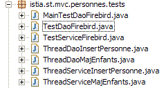
ملف تكوين طبقة [الخدمة] [spring-config-test-service-firebird.xml] هو الملف الموصوف في القسم 17.5.2.
اختبار JUnit [TestServiceFirebird] هو كما يلي:
1 2 3 4 5 6 7 8 9 10 11 12 13 14 15 16 17 18 19 20 21 22 23 24 25 26 27 28 29 30 31 32 33 34 35 36 37 38 39 40 41 42 43 44 45 46 47 48 49 50 51 52 53 54 55 56 57 58 59 60 61 62 63 64 65 66 67 68 69 70 71 72 73 74 75 76 77 78 79 80 81 82 83 84 85 86 87 88 89 90 91 92 93 94 95 96 97 98 99 100 101 102 103 104 105 106 107 108 109 110 111 112 113 114 115 116 117 118 119 120 121 122 123 124 125 126 127 128 129 130 131 132 133 134 135 136 137 138 139 140 141 142 143 144 145 146 147 148 149 150 151 152 153 154 155 156 157 | |
- الأسطر 19–22: يختبر البرنامج طبقتي [dao] و [service] اللتين تم تكوينهما بواسطة ملف [spring-config-test-service-firebird.xml]، الذي تمت مناقشته في القسم السابق.
- الاختبارات من [test1] إلى [test6] مطابقة من الناحية النظرية لنظيراتها التي تحمل نفس الاسم في فئة الاختبار [TestDaoFirebird] في طبقة [dao]. والفرق الوحيد هو أن طريقتي [saveOne] و[deleteOne] تنفذان الآن، حسب التكوين، ضمن معاملة.
- الغرض من طريقة [test7] هو اختبار طريقتي [saveMany] و [deleteMany]. نريد التحقق من أنهما يتم تنفيذهما بالفعل ضمن معاملة. دعونا نعلق على كود هذه الطريقة:
- السطور 62–63: نحسب عدد الأشخاص [nbPersonnes1] الموجودين حاليًا في القائمة
- الأسطر 67–72: نقوم بإنشاء ثلاثة أشخاص
- الأسطر 73–83: يتم حفظ هؤلاء الأشخاص الثلاثة بواسطة طريقة [saveMany] – السطر 77. سيتم إضافة أول شخصين، p1 و p2، اللذين لهما معرف يساوي -1 إلى جدول [PERSONNES]. الشخص p3 له معرف يساوي -2. لذلك، لا يعد هذا إدراجًا بل تحديثًا. سيفشل هذا التحديث لأنه لا يوجد شخص بمعرف -2 في جدول [PERSONS]. وبالتالي، ستقوم طبقة [dao] بإلقاء استثناء سينتقل إلى طبقة [service]. يتم التحقق من وجود هذا الاستثناء في السطر 83.
- بسبب الاستثناء السابق، يجب على طبقة [service] التراجع عن جميع عبارات SQL التي تم إصدارها أثناء تنفيذ طريقة [saveMany]، لأن هذه الطريقة تعمل ضمن معاملة. الأسطر 86–87: نتحقق من أن عدد الأشخاص في القائمة لم يتغير، مما يعني أن عمليات إدراج p1 و p2 لم تتم.
- الأسطر 88-103: نضيف p1 و p2 فقط ونتحقق من وجود شخصين إضافيين في القائمة الآن.
- الأسطر 106–114: نحذف مجموعة من الأشخاص تتكون من p1 و p2 اللذين أضفناهما للتو وشخص غير موجود (id = -1). تُستخدم طريقة [deleteMany] لهذا الغرض، السطر 108. ستفشل هذه الطريقة لأنه لا يوجد شخص برقم تعريف يساوي –1 في جدول [PERSONNES]. وبالتالي، ستقوم طبقة [dao] بإلقاء استثناء سينتقل إلى طبقة [service]. يتم التحقق من وجود هذا الاستثناء في السطر 114.
- نظرًا للاستثناء السابق، يجب أن تقوم طبقة [service] بإجراء [rollback] لجميع عبارات SQL التي تم إصدارها أثناء تنفيذ طريقة [deleteMany]، حيث إن هذه الطريقة تعمل ضمن معاملة. السطران 116–117: نتحقق من أن عدد الأشخاص في القائمة لم يتغير، وبالتالي فإن حذف p1 و p2 لم يحدث.
- السطر 122: نقوم بحذف مجموعة تتكون فقط من الشخصين p1 و p2. يجب أن ينجح ذلك. يتحقق باقي الأسلوب من أن هذا هو الحال بالفعل.
يؤدي تشغيل الاختبارات إلى النتائج التالية:

نجحت جميع الاختبارات السبعة. سنعتبر طبقة [الخدمة] الخاصة بنا جاهزة للعمل.
17.7. طبقة [w eb]
دعونا نستعرض البنية العامة لتطبيق الويب المراد بناؤه:
 |
لقد أنشأنا للتو طبقتي [dao] و[service] للعمل مع قاعدة بيانات Firebird. وقد كتبنا الإصدار 1 من هذا التطبيق حيث كانت طبقتي [dao] و[service] تعملان مع قائمة بالأشخاص في الذاكرة. تظل طبقة [web] التي تمت كتابتها في ذلك الوقت صالحة. في الواقع، كانت تتفاعل مع طبقة [service] التي تنفذ واجهة [IService]. وبما أن طبقة [service] الجديدة تنفذ نفس الواجهة، فلا داعي لتعديل طبقة [web].
في المقالة السابقة، تم اختبار الإصدار 1 من التطبيق مع مشروع Eclipse [mvc-personnes-02B]، حيث تم تجميع طبقات [web، service، dao، entities] في ملفات .jar:
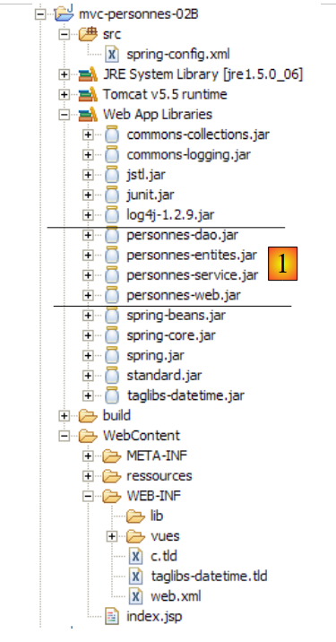 |
كان المجلد [src] فارغًا. وكانت فئات الطبقات موجودة في أرشيفات [people-*.jar]:
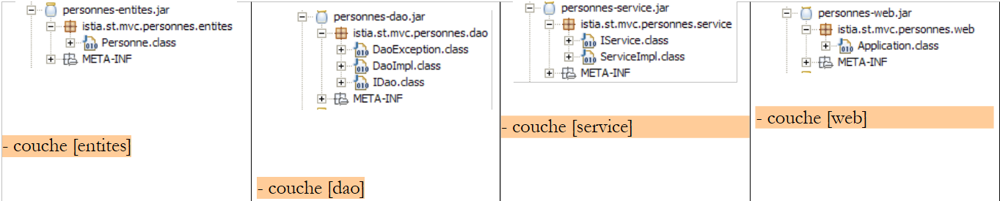 |
لاختبار الإصدار 2، نقوم في Eclipse بنسخ المجلد [mvc-personnes-02B] إلى [mvc-personnes-03B] (نسخ/لصق):

في مشروع [mvc-personnes-03]، نقوم بتصدير [ملف / تصدير / ملف Jar] طبقات [DAO] و[service] على التوالي إلى أرشيفات [personnes-dao.jar] و[personnes-service.jar] في مجلد [dist] الخاص بالمشروع:

نقوم بنسخ هذين الملفين، ثم نلصقهما في Eclipse في مجلد [WEB-INF/lib] لمشروع [mvc-personnes-03B]، حيث سيحلان محل الملفات التي تحمل نفس الاسم من الإصدار السابق.
 |
نقوم أيضًا بنسخ ولصق الأرشيفات [commons-dbcp-*.jar، commons-pool-*.jar، firebirdsql-full.jar، ibatis-common-2.jar، ibatis-sqlmap-2.jar] من المجلد [lib] الخاص بمشروع [mvc-personnes-03] إلى المجلد [WEB-INF/lib] الخاص بمشروع [mvc-personnes-03B]. هذه الملفات JAR مطلوبة لطبقات [dao] و [service] الجديدة.
بمجرد الانتهاء من ذلك، نقوم بتضمين ملفات JAR الجديدة في مسار فئة المشروع: [انقر بزر الماوس الأيمن على المشروع -> خصائص -> مسار إنشاء Java -> إضافة ملفات JAR].
يحتوي المجلد [src] على ملفات التكوين لطبقات [dao] و[service]:

يقوم ملف [spring-config.xml] بتكوين طبقات [dao] و [service] لتطبيق الويب. في الإصدار الجديد، يكون مطابقًا لملف [spring-config-test-service-firebird.xml] المستخدم لتكوين اختبار طبقة الخدمة في مشروع [mvc-personnes-03]. لذلك نقوم بالنسخ واللصق من أحدهما إلى الآخر:
<?xml version="1.0" encoding="ISO_8859-1"?>
<!DOCTYPE beans SYSTEM "http://www.springframework.org/dtd/spring-beans.dtd">
<beans>
<!-- data source DBCP -->
<bean id="dataSource" class="org.apache.commons.dbcp.BasicDataSource"
destroy-method="close">
<property name="driverClassName">
<value>org.firebirdsql.jdbc.FBDriver</value>
</property>
<property name="url">
<!-- warning: do not leave spaces between the two <value> tags -->
<value>jdbc:firebirdsql:localhost/3050:C:/data/2005-2006/eclipse/dvp-eclipse-tomcat/mvc-personnes-03/database/dbpersonnes.gdb</value>
</property>
<property name="username">
<value>sysdba</value>
</property>
<property name="password">
<value>masterkey</value>
</property>
</bean>
<!-- SqlMapCllient -->
<bean id="sqlMapClient"
class="org.springframework.orm.ibatis.SqlMapClientFactoryBean">
<property name="dataSource">
<ref local="dataSource"/>
</property>
<property name="configLocation">
<value>classpath:sql-map-config-firebird.xml</value>
</property>
</bean>
<!-- the [dao] layer access class -->
<bean id="dao" class="istia.st.mvc.personnes.dao.DaoImplFirebird">
<property name="sqlMapClient">
<ref local="sqlMapClient"/>
</property>
</bean>
<!-- transaction manager -->
<bean id="transactionManager"
class="org.springframework.jdbc.datasource.DataSourceTransactionManager">
<property name="dataSource">
<ref local="dataSource"/>
</property>
</bean>
<!-- access classes to the [service] layer -->
<bean id="service"
class="org.springframework.transaction.interceptor.TransactionProxyFactoryBean">
<property name="transactionManager">
<ref local="transactionManager"/>
</property>
<property name="target">
<bean class="istia.st.mvc.personnes.service.ServiceImpl">
<property name="dao">
<ref local="dao"/>
</property>
</bean>
</property>
<property name="transactionAttributes">
<props>
<prop key="get*">PROPAGATION_SUPPORTS,readOnly</prop>
<prop key="save*">PROPAGATION_REQUIRED</prop>
<prop key="delete*">PROPAGATION_REQUIRED</prop>
</props>
</property>
</bean>
</beans>
- السطر 12: عنوان URL لقاعدة بيانات Firebird. نستمر في استخدام قاعدة البيانات المستخدمة لاختبار طبقات [dao] و[service]
نقوم بنشر مشروع الويب [mvc-personnes-03B] داخل Tomcat:
 |  |
نحن جاهزون للاختبار . نظام إدارة قواعد البيانات Firebird قيد التشغيل. محتويات جدول [PERSONNES] هي كما يلي:

ثم يتم تشغيل Tomcat. باستخدام متصفح، نطلب عنوان URL [http://localhost:8080/mvc-personnes-03B]:
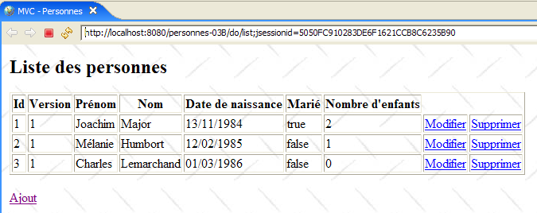
نقوم بإضافة شخصًا جديدًا باستخدام رابط [Add]:
 |  |
نتحقق من الإضافة في قاعدة البيانات:

ندعو القارئ إلى إجراء اختبارات أخرى [تحرير، حذف].
الآن دعونا نجري اختبار تعارض الإصدارات الذي تم إجراؤه في الإصدار 1. سيكون [Firefox] هو متصفح المستخدم U1. يطلب المستخدم U1 عنوان URL [http://localhost:8080/mvc-personnes-03B]:

سيكون [IE] متصفح المستخدم U2. يطلب المستخدم U2 نفس عنوان URL:

يقوم المستخدم U1 بإدخال تفاصيل الشخص [Perrichon]:

يقوم المستخدم U2 بنفس الشيء:
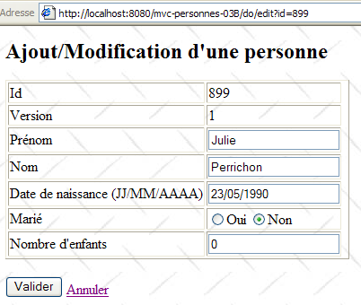
يقوم المستخدم U1 بإجراء تغييرات وإرسالها:
 |
يقوم المستخدم U2 بنفس الشيء:
 |
يعود المستخدم U2 إلى قائمة الأشخاص باستخدام رابط [إلغاء] الموجود في النموذج:

ويجدون الشخص [Perrichon] كما عدّله U1 (الاسم مكتوب بأحرف كبيرة).
وماذا عن قاعدة البيانات؟ دعونا نلقي نظرة:
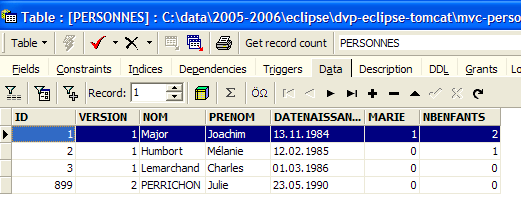
اسم الشخص رقم 899 مكتوب بالفعل بأحرف كبيرة وفقًا للتعديل الذي أجراه U1.
17.8. الخلاصة
دعونا نلخص ما أردنا القيام به. كان لدينا تطبيق ويب بهيكل ثلاثي المستويات كما يلي:
حيث كانت طبقتا [dao] و[service] تعملان بقائمة بيانات في الذاكرة كانت تُفقد عند إيقاف تشغيل خادم الويب. كان ذلك هو الإصدار 1. في الإصدار 2، أعيدت كتابة طبقتي [service] و[dao] بحيث يتم تخزين قائمة الأشخاص في جدول قاعدة بيانات. وهي الآن دائمة. نقترح الآن دراسة تأثير تغيير نظام إدارة قواعد البيانات (DBMS) على تطبيقنا. للقيام بذلك، سنقوم بإنشاء ثلاثة إصدارات جديدة من تطبيق الويب الخاص بنا:
 |
- الإصدار 3: نظام إدارة قواعد البيانات هو Postgres
- الإصدار 4: نظام إدارة قواعد البيانات هو MySQL
- الإصدار 5: نظام إدارة قواعد البيانات هو SQL Server Express 2005
تم إجراء التغييرات في المواقع التالية:
- تنفذ فئة [DaoImplFirebird] وظائف طبقة [dao] المتعلقة بنظام إدارة قواعد البيانات Firebird. إذا استمر هذا المطلب، فسيتم استبدالها بفئات [DaoImplPostgres] و[DaoImplMySQL] و[DaoImplSqlExpress] على التوالي.
- سيتم استبدال ملف التعيين iBATIS [personnes-firebird.xml] لنظام إدارة قواعد البيانات Firebird بملفات التعيين [personnes-postgres.xml] و [personnes-mysql.xml] و [personnes-sqlexpress.xml]، على التوالي.
- يكون تكوين كائن [DataSource] في طبقة [dao] خاصًا بنظام إدارة قواعد البيانات. وبالتالي، سيتغير مع كل إصدار.
- كما يتغير برنامج تشغيل JDBC لنظام إدارة قواعد البيانات مع كل إصدار
وبصرف النظر عن هذه النقاط، يبقى كل شيء آخر على حاله. في الأقسام التالية، نصف هذه الإصدارات الجديدة، مع التركيز حصريًا على الميزات الجديدة التي يقدمها كل منها.